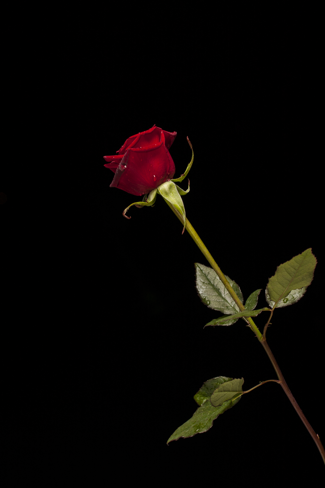
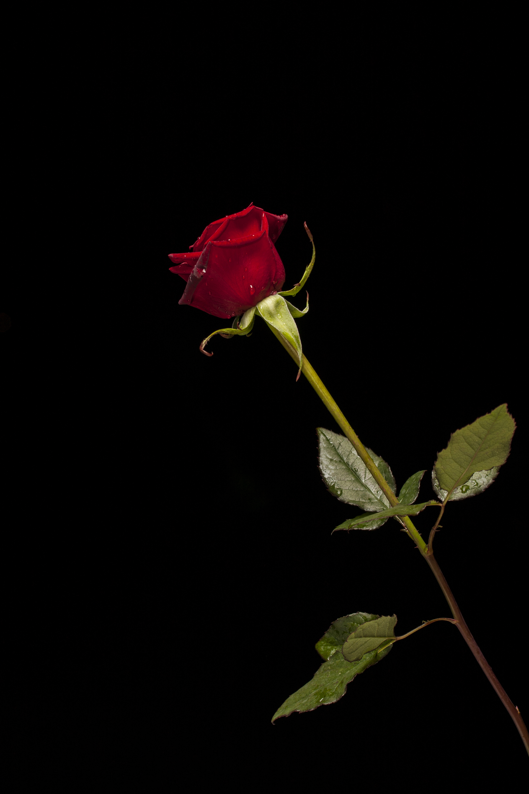

Waterlily
Water Lilies are a perennial tuber water plant. It is native to Europe.
Water Lilies go dormant in Winter and will start growing again in Spring before flowering later on
in late Spring to mid Summer. Their flowers come in many colours including apricots, pinks, reds,
whites and yellows where most varieties will open their flowers in the morning and close them again
at night. The flowers are held just above the glossy leaves that have distinctively smooth edges
and lay upon the water surface.
Chrysanthemum
Chrysanthemums (mums) are one of the most popular fall garden flowers.
Most mum plants are easy to grow with their basic needs being full sun, rich soil, good drainage,
and good air circulation.
There are hundreds of varieties available in a range of shapes and sizes that can provide blooms
from late summer through fall.
Chrysanthemums symbolize different things in different countries: life and rebirth in Asia,
sympathy in Europe, and respect and honor in America.
Gerbera
In cheerful, warm colours or cooler pastels, gerberas bloom throughout the summer months.
They have long been grown as houseplants, summer bedding and for cut flowers, and new hardy forms
are further increasing their versatility and appeal.
The bold daisy flowers come in a wide array of colours – reds, oranges, yellows, purples, pinks and
white – often rich and vibrant but also softer tones. These long-lasting flowers stand above dense
clumps of foliage.
Gladiolus
The perennial gladiolus flower is known and loved for its tall, sword-like stalk and its
trumpet-shaped flowers, which bloom in an array of beautiful, bold colours.
Gladioli make the perfect statement flower in any arrangement and have been traditionally gifted
for some of life's most special celebrations, including anniversaries, Valentine's Day, and
birthdays.
Rose
Rows and rows of roses are what you're often met with when you enter most flower shops or floral
departments. One of the most popular cut flowers in the floral industry, over the years, the
fragrant, multi-petaled flower has become the popular choice for a wide variety of celebrations
and cultural practices around the world.
Roses of different colours mean different things, and roses are still the most popular choice for
expressing affection for another human being.
Tulip
Tulips came from Central Asia where they grew as a wildflower. They were first cultivated in Turkey
around 1000 AD. The tulip name actually comes from the Turkish word for 'turban' for their similar
appearances. Tulips were brought over to Europe in the 16th century by a biologist called Carolus
Clusius. And by the 17th century, the popularity of tulips soared. The Netherlands loved tulips so
much a phenomenon named 'the tulip mania' came in and caused the price of the flowers to skyrocket,
crashing the markets.
Carnation
Carnations, scientifically known as Dianthus caryophyllus, are like the celebrities of the floral
kingdom. With their frilly petals and a captivating fragrance that can make your senses dance,
these flowers are a true feast for the eyes and nose alike. Their colors range from classic whites,
pinks, and reds to vibrant yellows and purples. What makes carnations truly stand out is their
fringed or serrated petals, giving them a unique and intricate appearance.